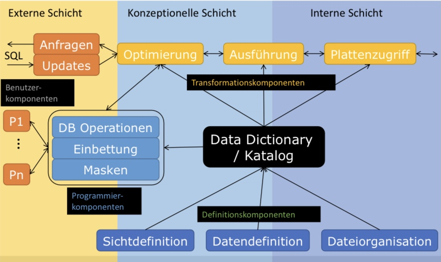

3. Architektur#
Bei einem Datenbankmanagementsystem handelt es sich um Software und als solche sind Portierbarkeit und Datenunabhängigkeit grundsätzliche Anforderungen.
3.1. Datenunabhängigkeit#
Die physische Sicht auf Daten ist oft plattformabhängig und unflexibel. Deshalb hat man sich schon sehr früh zum Ziel gesetzt, verschiedene Schichten zu definieren, um so Zugriff auf Daten für Anwendungen zu standardisieren und Systeme portierbar zu machen. Hierbei teilt man die Datenunabhängigkeit insbesondere an zwei Schnittstellen auf:
Physische Datenunabhängigkeit besagt, dass die Änderungen der Dateiorganisationen und Zugriffspfade keinen Einfluss auf das konzeptuelle Schema der Daten haben soll. Das heißt, dass unsere Anfragesprache immer nur das relationale Datenmodell und die definierten Schemata kennen muss und nie wie diese denn tatsächlich auf der Festplatte abgelegt sind.
Logische Datenunabhängigkeit besagt, dass Änderungen am konzeptuellen und gewissen externen Schemata keine Auswirkungen auf andere externe Schemata und Anwendungsprogramme haben dürfen.
3.2. Schichtenmodell#
In der unteren Abbildung sieht man die drei Sichten oder Ebenen nach der 1975 vorgestellten ANSI-SPARC-Architektur nach Felix Naumann. ANSI steht hierbei für American National Standards Institute und SPARC für Standards Planning and Requirements Committee.

ANSI-SPARC_Architektur mit Komponenten nach Felix Naumann
Die interne (physische) Schicht/Sicht ist durch das Speichermedium (Tape, Festplatte) definiert und kümmert sich um die Art und Weise wie Daten tatsächlich auf diesen Medien abgelegt werden. Auch wird hier das Physische Datenlayout definiert.
Die konzeptionelle (logische) Schicht/Sicht bietet eine Abstraktion von der physischen Sicht. Hier wird das Datenmodell definiert, wodurch ein stabiler Bezugspunkt für die interne und externe Schicht geboten wird. Objekte in dieser Schicht sind Schemaobjekte, wie Relationen, Attribute und Typen aus dem relationalen Modell.
Die externe (logische) Schicht/Sicht beschreibt die Sicht der Anwendungsprogramme auf die relevanten Datenmengen. Hier treten Nutzungseinschränkungen auf. Es können hierbei weiterhin auf die relationalen Objekte zugegriffen werden. Oft werden jedoch sogenannte “Views” definiert, die den Umfang der zur Verarbeitung bereitgestellten Daten pro Anwendung einschränken.
Wie man in der Abbildung oben sieht, kann man die meisten Systemkomponenten der DBMS-Software in der konzeptionellen Schicht verorten. Dort werden Anfragen verarbeitet, optimiert und ausgeführt. Es gibt natürlich Schnittstellen zu den Anwendungungsprogrammen durch Anfrageschnittstellen und zum Betriebssystem oder der Hardware durch System-APIs und Treiber.
Auch wenn es sich hierbei um einen Standard handelt, gibt es bei heutigen Datenbanksystemen oft Abweichungen. Beispielsweise haben Anwendungen oft direkten Zugriff auf die konzeptionelle Ebene.